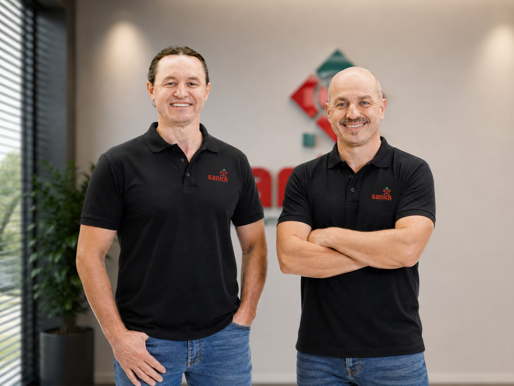

Institucional
Nascemos dentro de uma universidade em Chapecó/SC para resolver um problema que a indústria trata como inevitável: a contagem imprecisa. Duas décadas depois, somos uma empresa de tecnologia com clientes em 3 continentes.

O que nos move
"Toda peça contada é uma promessa cumprida."
Uma contagem imprecisa significa peças a mais — desperdício — ou peças a menos — retrabalho. A Sanick nasceu em 2006 para resolver esse problema com ciência aplicada ao chão de fábrica, não com promessa de marketing. Não vendemos equipamentos. Vendemos a certeza de que cada peça foi contada corretamente.
Nossa história
Vinte anos de chão de fábrica, ciência aplicada e proximidade com o cliente — contados em três momentos.
Fundada em agosto de 2006, dentro de uma incubadora universitária no oeste de Santa Catarina, a Sanick nasce da vontade de transformar conhecimento acadêmico em solução industrial real. Uma empresa de base tecnológica que aplica ciência, tecnologia e inovação ao problema mais caro e ignorado da produção: a contagem de pequenas peças.
Contadores eletrônicos, alimentadores vibratórios, envelopadoras — cada produto nasceu de uma necessidade real de um cliente real. Aprendemos que precisão não é teoria: é funcionar 24 horas por dia em ambientes com pó, vibração e temperatura extrema. Nesse período, construímos em silêncio uma base de mais de 60 clientes, incluindo algumas das maiores corporações do mundo.
Do nosso portfólio, um produto chama atenção: o sensor Intelicount, com IA proprietária e calibração adaptativa automática. Validado em seis segmentos industriais — do agronegócio à odontologia — fica claro que a Sanick não é mais apenas uma fabricante de equipamentos: é uma empresa de tecnologia industrial com potencial global.
Propósito, missão e visão
Missão
Desenvolver soluções de sensoriamento inteligente que combinam hardware robusto, algoritmos de IA proprietários e relacionamento humano para tornar a contagem industrial confiável, acessível e contínua.
Visão
Ser referência global em sensores inteligentes de contagem para a Indústria 4.0 e 5.0 — a ponte entre a precisão brasileira e a transformação digital do chão de fábrica no mundo.
Quem lidera
Comercial e técnico. Ambição e precisão. Chão de fábrica e visão de futuro — a mesma combinação que define o produto está na origem da empresa.

Fabiano
Direção comercial & estratégia
Responsável pela visão de negócio e relacionamento com o mercado. Conduz a Sanick na leitura de novos segmentos e na construção da proximidade com o cliente que virou marca registrada da empresa.
Adriano
Direção técnica & P&D
À frente do desenvolvimento de produto e da engenharia aplicada. É dele a obsessão por precisão que fez da Sanick uma empresa capaz de validar 99,9% de exatidão em ambientes industriais severos.
Essência da marca
Em quatro palavras, a nossa essência resume o racional — 99,9% de precisão — e o emocional: a tranquilidade de quem não precisa conferir porque pode confiar.
Presença
Somos uma empresa brasileira de tecnologia industrial — e isso é um ativo, não uma limitação.
Conte com a Sanick
Fale com o nosso time e entenda como duas décadas de P&D podem resolver o problema de contagem da sua produção.
Falar com um especialista